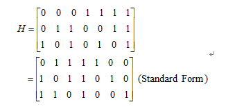
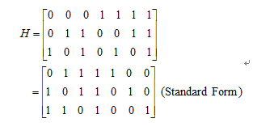

Hamming 编码算法
一、实验内容
编程实现线性分组码的信道编码和译码。
二、实验目的
- 掌握线性分组码的编码和译码原理以及纠错原理
- 掌握 VC 开发环境的使用（尤其是程序调试技巧）
- 掌握 C 语言编程（尤其是位运算和文件的操作）
三、实验要求
- 提前预习实验，认真阅读实验原理以及相应的参考书。
- 认真高效的完成实验，试验中服从实验室管理人员以及实验指导老师的管理。
- 认真填写实验报告。
四、实验原理
(7,4)汉明码的校验矩阵如下：
编程实现线性分组码的信道编码和译码。
(7,4)汉明码的校验矩阵如下：
